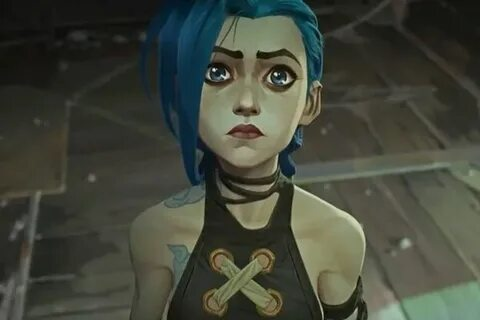
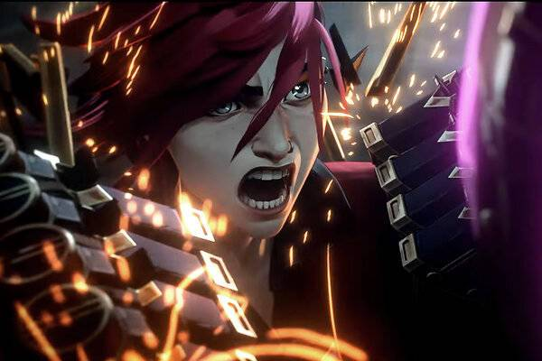
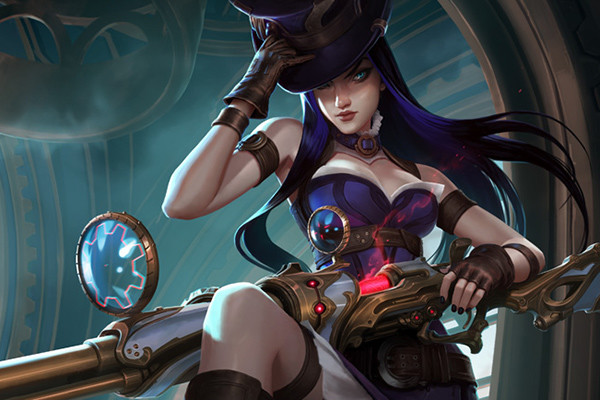
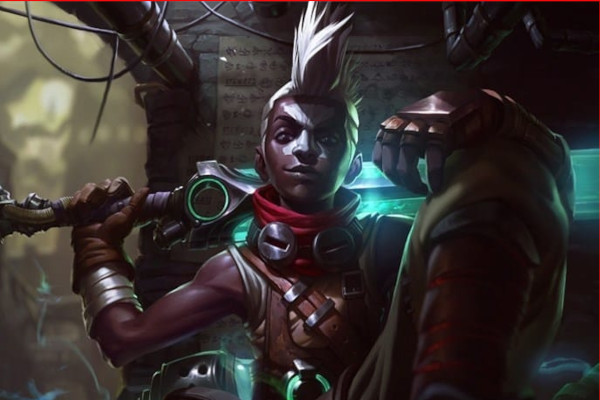

О чем этот сериал?
Сюжет «Аркейн» выстроен вокруг драматических отношений сестер Вай и Паудер (она же Джинкс в будущем) из нижнего города Зауна. Параллельно с этим проходит история ученого Джейса и его друга-напарника Виктора из Пилтовера. Вместе они пытаются обуздать магию с помощью технологии и создают хекстек — мощные наполненные энергией кристаллы, которые они планируют использовать во имя науки и мира. «Аркейн» — точно не мультик для детей.
-

Jinx in Arcane
Сначала мы познакомимся с Джинкс под ее настоящим именем: В детстве ее звали Пудра (а не Пола, как, видимо, поняли некоторые зрители). Она — младшая сестра Виса, которая очень старается и хочет быть полезной, но в процессе обычно делает все намного хуже.
-

Vi in Arcane
В сериале Netflix Ви — одна из главных героинь. Она — сирота из нищенского подземного города Жаун, и вместе со своей сестрой Пудрой ее удочерил бывший гангстер Вандер. Она буквально прокладывает себе путь через опасные переулки как словами, так и своими сильными кулаками.
-

Caitlyn in Arcane
Молодая силовик происходит из высокопоставленного дома Пилтовер, но не боится запачкать руки. Она полна решимости обеспечить безопасность и справедливость и идет на большой риск ради этого.
-

Ekko in Arcane
У маленького мальчика из Жауна лишь довольно небольшая роль в первом акте в качестве друга Ви и Паудера. Хотя он растет во враждебной и жестокой среде, он полон стремления и оптимизма. Он даже уже тренируется, чтобы стать бойцом.
Плюсы сериала
Высочайшее качество истории
Сильные герои
Яркий и необычный визуальный стиль
Потрясающая музыка
Минусы сериала
Сюжетные допущения
Сверхбыстрый темп событий в финале
Вердикт об сериале
Для фанатов игры «Аркейн» — это отличная игровая адаптация, которые за все время существования индустрии можно пересчитать по пальцам. Для всех остальных «Аркейн» — качественно сделанный, продуманный, взрослый и великолепный сериал без привязки к играм. Ведь если в нем убрать вообще все упоминания о «Лиге», заменив персонажей и сеттинг, то он все равно останется шикарной историей из мира фэнтези, с полноценно раскрытой драмой и глубоким психологизмом. Создатели таким стартом сериала поставили себе очень высокую планку качества, и любой промах будет сопровождаться очень болезненной реакцией фанбазы. Но если судить по тому, как бережно и с любовью к своему детищу они отполировали почти каждую деталь этой истории, хочется верить, что и второй сезон ждет оглушительный успех.